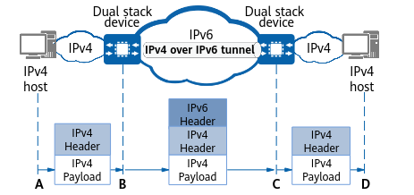

Understanding IPv4 over IPv6 Tunnels
An IPv4 over IPv6 tunnel is manually configured between border devices connecting two IPv4 networks to an IPv6 network, with the source addresses or interfaces and the destination addresses statically specified.
On the network shown in Figure 1, packets passing through the IPv4 over IPv6 tunnel are processed on border nodes DeviceB and DeviceC, and all the other nodes (HostA, HostD, and nodes between DeviceB and DeviceC) are unaware of the tunnel. IPv4 packets are transmitted between HostA and DeviceB, and between DeviceC and HostD, and IPv6 packets are transmitted between DeviceB and DeviceC. Therefore, DeviceB and DeviceC must be able to process both IPv4 and IPv6 packets; that is, IPv4/IPv6 dual stack must be supported by and enabled on both DeviceB and DeviceC.
Figure 1 Schematic diagram of an IPv4 over IPv6 tunnel
Figure 1 shows how an IPv4 packet is forwarded over an IPv4 over IPv6 tunnel.
- IPv4 packet forwarding: HostA on an IPv4 network sends an IPv4 packet to the border node DeviceB, with the destination IPv4 address being the IP address of HostD.
- Tunnel encapsulation: When receiving the IPv4 packet from HostA, DeviceB discovers that the destination address of the IPv4 packet is not its own and the outbound interface is a tunnel interface, so DeviceB attaches an IPv6 header to the IPv4 packet. Specifically, in the IPv6 header, DeviceB encapsulates both its own and DeviceC's IPv6 addresses into the Source Address and Destination Address fields, respectively, sets the Version field to 6 and the Next Header field to 4, and encapsulates the fields that ensure effective transmission of the packet along the tunnel based on the configuration. For details about the format of a basic IPv6 header, see "IPv6 Basic Configuration" under "IP Addresses and Services Configuration."
- Tunnel forwarding: DeviceB searches its IPv6 routing table for an entry matching the destination address in the IPv6 header, and forwards the IPv6 packet to DeviceC. Other nodes on the IPv6 network are unaware of the tunnel and process the IPv6 packet as an ordinary IPv6 packet.
- Tunnel decapsulation: Upon receipt of the IPv6 packet, DeviceC discovers that the destination address is its own IPv6 address and the encapsulated packet is an IPv4 packet based on the Next Header field, and then decapsulates the IPv6 packet by removing the IPv6 header based on the Version field.
- IPv4 packet forwarding: DeviceC searches its IPv4 routing table for an entry matching the destination address of the IPv4 packet and forwards the packet to HostD.